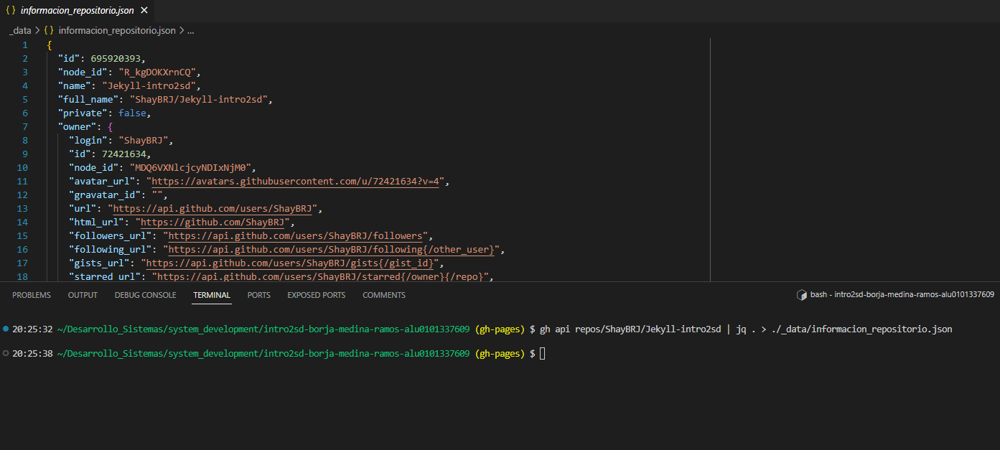

Información del repositorio.
Contenidos
Propietario: ShayBRJ
Nombre del repo: Jekyll-intro2sd
URL: Link al repo
Lenguaje: Ruby
Datos del JSON
Se ha tomado los anterior valores desde el fichero .json. Este se ha obtenido mediante la GitHub CLI, en el que se ha realizado una llamada a la API de GitHub y con los permisos adecuados, se ha obtenido la información necesaria. Véase a continuación el comando para tal llamada:
